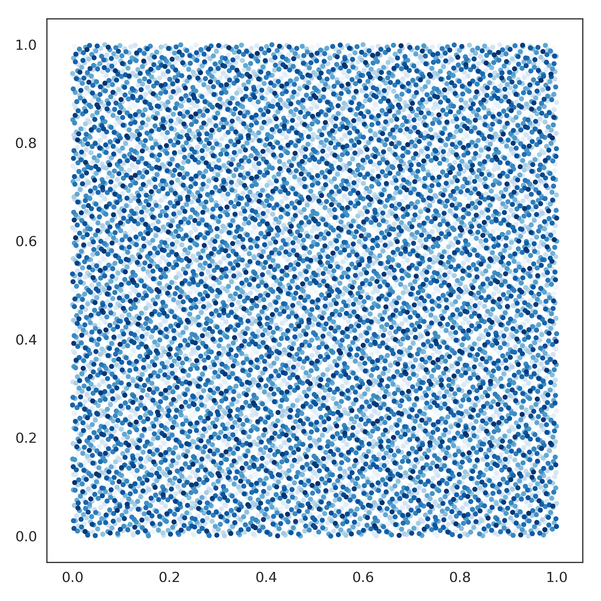

nengolib.stats.Sobol¶
-
class
nengolib.stats.Sobol[source]¶ Sobol sequence for quasi Monte Carlo sampling the
[0, 1]–cube.This is similar to
np.random.uniform(0, 1, size=(num, d)), but with the additional property that eachd–dimensional point is uniformly scattered.This is a wrapper around a library by the authors Corrado Chisari and John Burkardt (see License). [1]
See also
Rd,ScatteredCube,spherical_transform(),ScatteredHypersphereNotes
This is deterministic for dimensions up to
40, although it should in theory work up to1111. For higher dimensions, this approach will fall back torng.uniform(size=(n, d)).References
[1] http://people.sc.fsu.edu/~jburkardt/py_src/sobol/sobol.html Examples
>>> from nengolib.stats import Sobol >>> sobol = Sobol().sample(10000, 2)
>>> import matplotlib.pyplot as plt >>> plt.figure(figsize=(6, 6)) >>> plt.scatter(*sobol.T, c=np.arange(len(sobol)), cmap='Blues', s=7) >>> plt.show()
Methods
sample(n[, d, rng])Samples npoints inddimensions.